MMA
Хабиб vs Фергюсон: как это будет
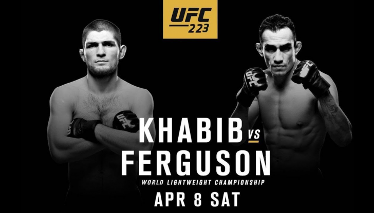 Любители олдскула всегда любили вспоминать с ностальгией былое время. И трава раньше зеленее была, и солнце светило ярче, и бои, если говорить о ММА, были бескомпромисснее. Все, мол, нынче на деньгах завязано. Соревновательный момент ушел, а на смену пришли трэштокеры и бизнесмены, отодвинувшие истинных бойцов на второй план. Чемпионский бой в легком весе UFC, запланированный на 8 апреля наверняка станет для таких ценителей истинной драки настоящей отдушиной.
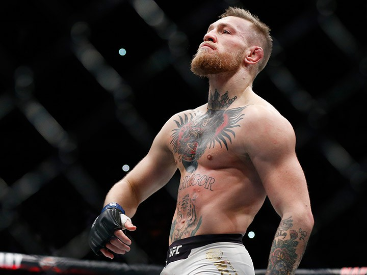Тони Фергюсон (23-3) против Хабиба Нурмагомедова (25-0) это действительно бой сильнейших легковесов в мире. И не надо вспоминать о том ирландце. Сегодня точно не о нем. И Тони и Хабиб настоящий стилистический кошмар для "пока еще чемпиона". До боя остается чуть больше недели, спортсмены выходят на финальный этап подготовки, а мы давайте попробуем пофантазировать на тему "как это будет". Поехали.
Сразу оговоримся, что те самые олдскульщики, которых мы упомянули в начале уже успели вылить добрую порцию критики на участников этого боя за срывы предыдущих поединков. Первая попытка организовать бой сорвалась по причине травмы Фергюсона, затем уже россиянин не сумел сделать вес. Но вопреки всему эти препоны лишь подогрели интерес к противостоянию.
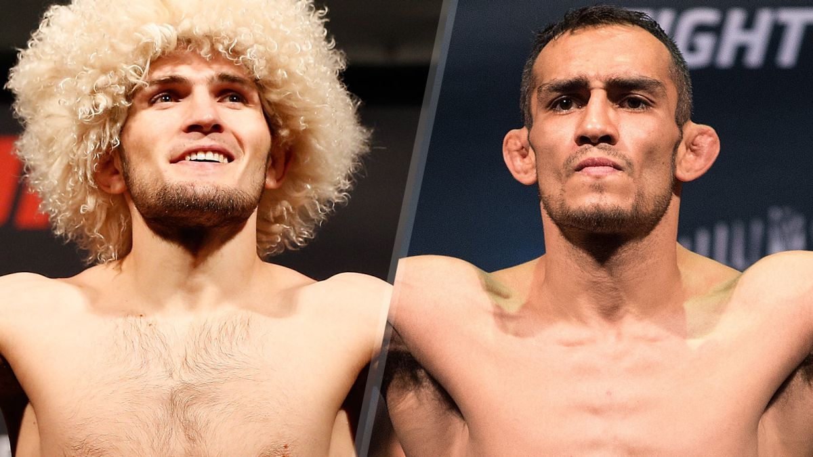 Для российских болельщиков этот бой притягателен тем, что впервые в истории UFC россиянин может завоевать титул. Кроме того это третий подряд номерной турнир UFC, в котором главным событием становится бой с участием наших спортсменов. Прибавьте к этому впечатляющие победные серии того и другого бойцов и становится окончательно ясно, что более яркой вывески для чемпионского боя в этом дивизионе просто не найти.
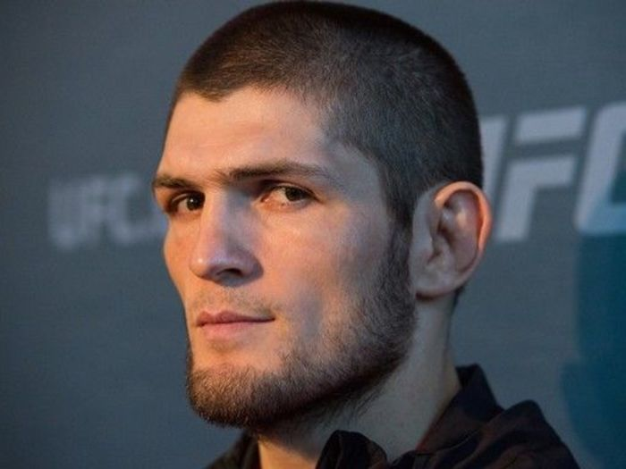 Хабиба Нурмагомедова называют лучшим борцом в UFC. Ему принадлежит рекорд по количеству проведенных тейкдаунов в бою. Он не проиграл ни одного раунда. Более того, по слухам, даже на тренировочных спаррингах не было ни одного случая, когда он выглядел слабее своего партнера. Причем россиянин тренируется и со средневесами и даже с полутяжами. Это кажется невероятным, но против фактов не попрешь. Обладатель идеального рекорда с нулем в графе поражений выглядит сегодня непобедимым. Так ли это на самом деле? Есть мнение, что готового на 100% "Орла" и впрямь в легком дивизионе UFC победить некому. Впрочем, с этим абсолютно не согласен Тони Фергюсон.
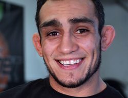 Американец, в отличие от россиянина, отнюдь не выглядит непобедимым. Его серия из 10 побед подряд выглядит впечатляюще, но многие из этих побед были одержаны не "благодаря", а "вопреки". Тот же Ваната (9-2) был в шаге от того, чтобы нокаутировать "Эль Кукуя". Были проблемы у Фергюсона и в титульном поединке с Кевином Ли (16-3). Пока у Ли оставался бензин, Тони не имел преимущества. Наивно полагать, что Хабиб устанет также быстро, как и Кевин.
К несомненным плюсам американца можно отнести великолепную работу из гарда, опаснейшие локти и способность находить решение там, где его вроде бы нет. "Эль Кукуй" очень стойкий боец, не в том плане, что его сложно повалить, здесь то как раз у Нурмагомедова проблем быть не должно, стойкий именно в моральном плане. Неудачно складывающийся бой однозначно не сломает его психологически и он будет опасен до самого конца боя.
Говоря о результате, наиболее вероятной выглядит победа Хабиба Нурмагомедова единогласным решением по итогам пяти раундов.
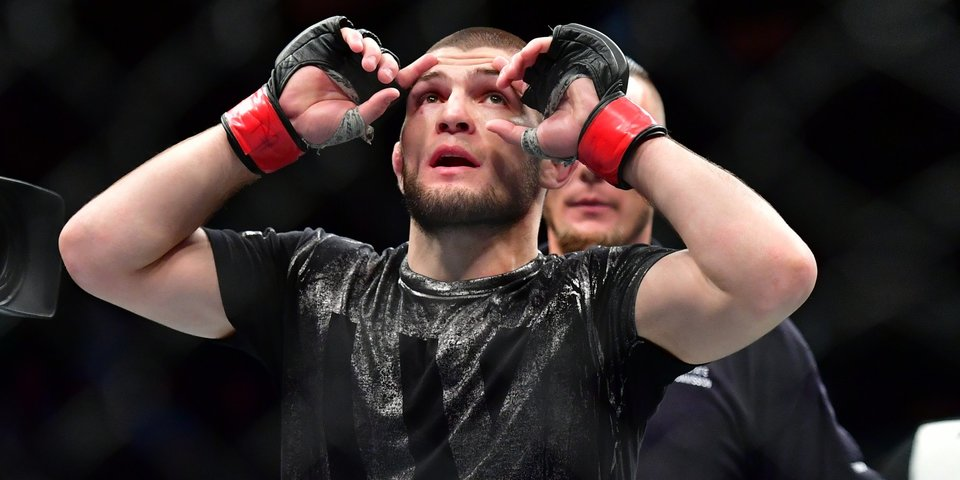Россиянин наверняка постарается финишировать оппонента. Но Фергюсон имеет все, чтобы дожить до гонга. Впрочем, американец наверняка с подобным раскладом не согласится. Все специалисты в один голос твердят о том, что Тони не сможет избежать партера. Да, вероятнее всего так и будет. Но что если он и не будет его избегать?
Фергюсон великолепный грепплер и тоже очень вынослив и силен физически. Вопрос выносливости может сыграть в этом бою ключевую роль. По умолчанию считается, что Хабиб не устает никогда, но третий раунд против Барбозы заронил робкие семена сомнений в этом. Возможно россиянин просто чуть сбавил обороты, а что если это и правда усталость?
В этом шанс для "Эль Кукуя". Нет никаких сомнений, что в первых раундах Хабиб будет доминировать. А вот что будет дальше - вопрос.
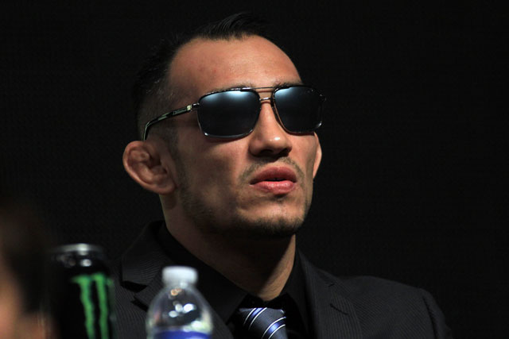 Вспомним и добавим сюда же опаснейшие локти Фергюсона, которыми он, при определенном везении может рассечь Нурмагомедова и увидим, что шансы американца не такие уж и призрачные. И для Тони и для Хабиба это будет самый сложный бой из возможных. Говорят, что даже тот самый ирландец приедет, чтобы посмотреть это зрелище и вызвать на бой победителя.
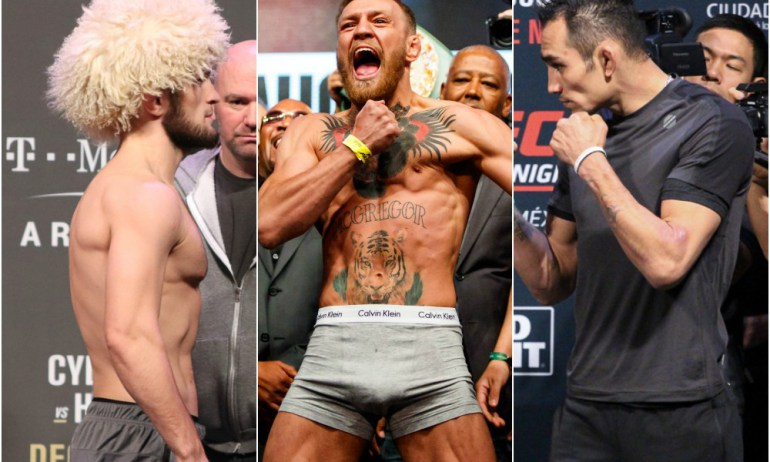 Может и так, да только что-то смутные сомнения терзают, что захочется ему под танк бросаться после шелковых простыней. Впрочем, кого это сейчас волнует?
29.03.2018
Ронда Раузи: «Было время, когда я просто искала способ достойно уйти из UFC»
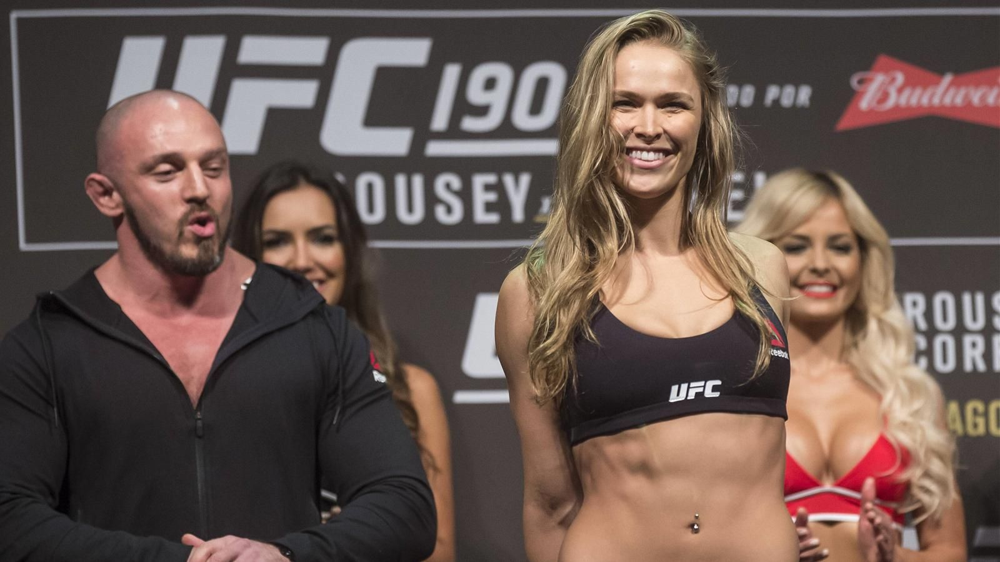 Бывшая чемпионка легчайшего веса UFC Ронда Раузи (12-2) о том, как и почему хотела уйти из промоушена.
«Я в рестлинге для собственного удовольствия. Это единственная вещь, которая не была для меня приоритетом. В дзюдо и ММА у меня были времена, когда процесс и результаты доставляли удовольствие. Были времена, когда все шло своим чередом. Ты влюбился, разлюбил и нашел новую любовь.
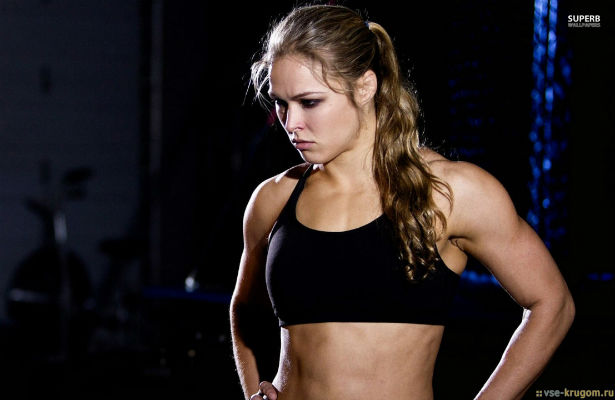 Было время, когда я просто искала способ достойно уйти из UFC. Была удовлетворена тем, что доказала все, что должна была, но не было ощущения, что все остальные думали так же.
Я не была уверена в том, что женский дивизион выживет без меня, и чувствовала, что обязана сделать больше, чем хотела. Но ни о чем не сожалею, и очень рада, что выполнила эти обязательства. Теперь я уверена, что женский дивизион UFC может существовать без меня»,- закончила Раузи.
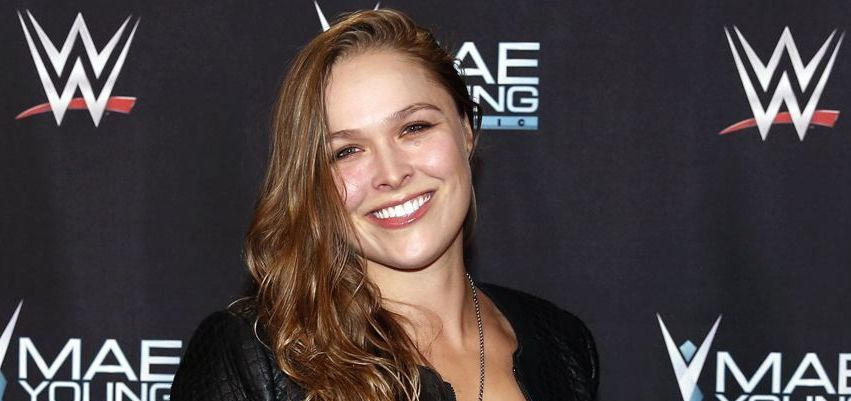
29.03.2018

Похожие новости
Футбол
В «Зените» пообещали «всех рвать» [...]
Де Хеа попросил продать его в «Реал» [...]
Биатлон
Тренер Гросс сменит сборную России по биатлону на австрийскую команду [...]
Чемпионка мира Юрьева об основной проблеме в российском биатлоне [...]
Другие новости
Наша страна
ЦИК опубликовал проект постановления по итогам выборов 2018 [...]
Главные праздники и события в Москве в 2018 году [...]
Новости IT-индустрии
Samsung принимает заказы от производителей систем-майнеров [...]
Nougat стала самой популярной версией Android [...]
Наука
Ученые создали рыбу-робота для изучения подводного мира [...]
Ученые открыли новую форму света [...]
Новости культуры
В московском метро запустили тематический поезд "Малый театр" [...]
Владимир Путин призвал создать в регионах России сеть культурных центров [...]
Кибербезопасность
Злоумышленники пытаются использовать уязвимости процессоров [...]
AMD Zen 2 не будет иметь уязвимостей Spectre [...]